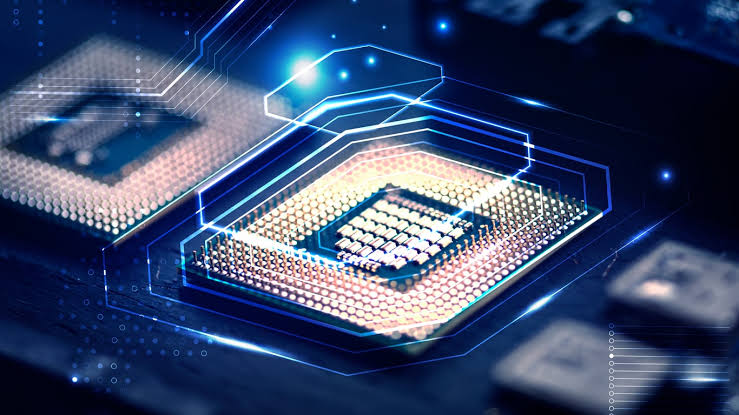
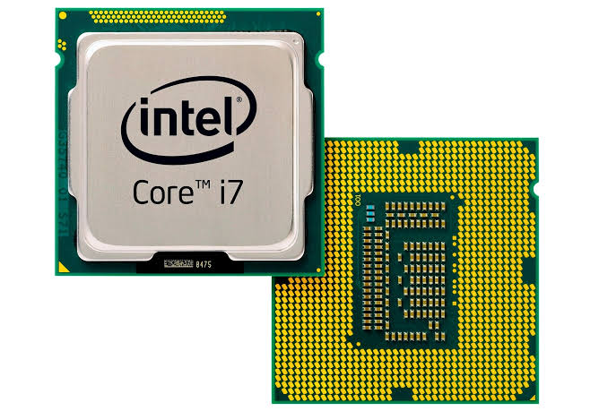

Types of Processor
The general-purpose processors are represented by the microprocessor in embedded systems. There are different varieties of microprocessors available in the market from different companies. the microprocessor is also a general-purpose processor that consists of control unit, ALU, a bunch of registers also called scratchpad registers, control registers and stautus registers. 
The multiprocessor is a computer with more than one CPU, each shares main memory, a computer bus, and peripherals to simultaneously process the programs and these systems are also known as tightly coupled systems. The advantages of multiprocessors are increased throughput increased reliablility and economy of scale.
The image/video processor is the media processor that is designed or created to deal with the data in real-time. The voice user interface and professional audio are the applications of the audio processor Some of the media processors are TN2302AP IP. IN2602 AP IP. DM3730, OM325 DM37385, DM388, TMS320DM5467 TMS0200M6431
The microcontroller is basically a computer that comes in various packages and sizes. The reading input and responding to output is the basic function of the microcontroller. Generally, it is known as General Purpose Input Output (GPIO) Some of microcontrollers are Microchip Atmega328- AU, Microchip PIC16F877A-/P Microchip P1C16F1503-1/P. Microchip P1C16F671-1/SN. Microchip P1C18F45K22+/P, etc.
The digital signal processor is one type of processor used for measuring, filtering and/or compress digital or analog signals. The signal processing means analysis and manipulation of signal. This processing can be done via computer or Application Specific Integrated Circuits (ASIC), Field Programmable Gate Array (FPGA) or Digital Signal Processor (DSP) to obtain the clear signal The DSP processors an oscilloscope, barcode u pasn a scanners, mobile phones, printers, etc These processors are fast and use for real-time applications The typical DSP system S shown in the below figure
The application-specific system processor is a semiconductor integrated circuit product used to implements a specific function. The performance, characteristics and die size of the application-specific system processor is the same as the ASIC. The ASSP's are used in various types of industries to perform video encoding or decoding and audio encoding or decoding.